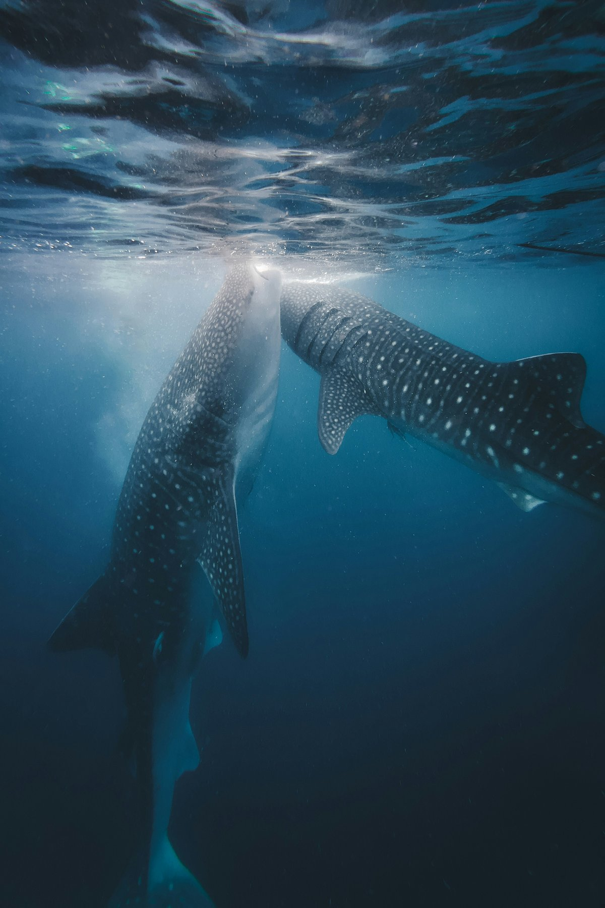

Coral Sea Spatial Telemetry
Whale Shark Tracking & Spotting Patterns
Explore the geographic movement corridors of Whale Sharks (Rhincodon typus) across Australia's Great Barrier Reef, the Coral Sea, and Papua New Guinea — combining 18 satellite-tagged trajectories with 136 opportunistic sightings.
Coral Sea Whale Shark Trajectories & Sightings (Australia & Papua New Guinea)
Showing all 18 sharks (2,255 tracks + 136 sightings)
Data Layers:
How to Explore: On load, the map displays all 18 satellite-tracked movement trajectories (turquoise tracks) alongside 136 historical sightings (coral markers). Select any individual shark from the dropdown above to isolate its migration path across the Coral Sea and inspect its individual GPS surface fixes.
Interactive Whale Shark Sightings & Concentration Explorer
Showing 2,391 of 2,391 records
Data Source:
Map Layer:
How to Explore: Click any marker to inspect metadata (date, shark ID, sex/life stage, and coordinates). Switch between Historical Sightings and Satellite Tracking, toggle the Concentration Heatmap, or drag the Date Range Slider.
🧭 How to Read This Map
Key guideposts for interpreting the data:
📍 Sightings vs. Satellite Tracks
Historical sightings (coral markers) represent opportunistic observations from 2007–2018. Satellite tracking records (teal markers) represent locations transmitted by satellite tags attached to 18 individual sharks between 2018 and 2024.
👥 Markers vs. Population Size
Multiple markers clustered in one location indicate repeated observations over time, not a larger population gathering at once.
📡 Why Tracking Gaps Occur
Satellite tags only uplink when a shark surfaces. Gaps between points mean the shark was swimming submerged or diving, not that it stopped moving.
🔥 Heatmaps & Observation Density
Heatmaps highlight concentrations of recorded points and tagging effort, not whale shark population density.
Map Legend:
Historical Sighting (136 records)
Satellite Tracking (2,255 records)
Heatmap (Recorded Point Concentration)
Key Patterns
What the Data Tells Us
Core movement, timing, and habitat patterns identified across Coral Sea telemetry records.

🌐 Pattern 1 · Spatial Scale
Long-Distance Movements
Observation: Sharks traveled thousands of kilometers across open ocean, with Ali logging ~11,378 km into Papua New Guinea.
Key Insight: Movements routinely cross international maritime boundaries and deep ocean basins.

☀️ Pattern 2 · Seasonal Timing
Seasonal Timing
Observation: Transmissions peak from November through February, dropping sharply during winter months.
Key Insight: Summer activity aligns with seasonal plankton blooms and mass coral and fish spawning.

📍 Pattern 3 · Key Habitat
Core Aggregation Hub
Observation: Telemetry clusters heavily at Wreck Bay (12.1°S–12.2°S) along the outer Great Barrier Reef shelf.
Key Insight: Confirmed aggregation sites allow managers to focus seasonal zoning and vessel speed limits.